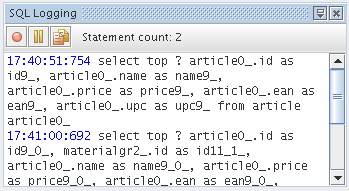

The Logging Window gives you an exact view of what's going on
behind the scenes. It displays every SQL statement which is executed
by hibernate to retrieve the results.
Can be accessed by using the menu entry Window | Session Factories | SQL Logging Window
